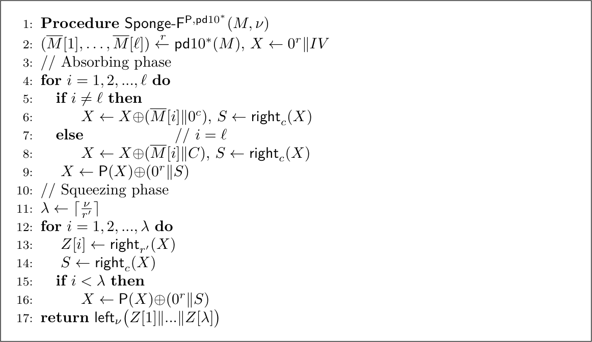
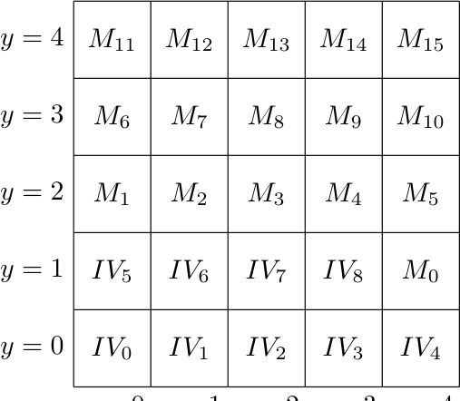
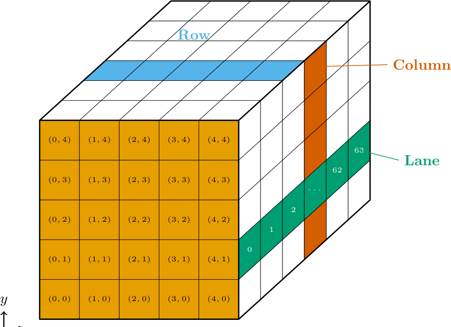
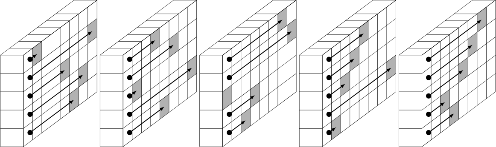
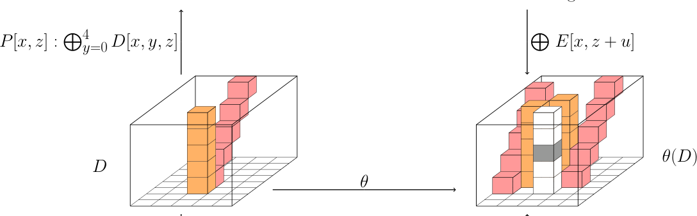
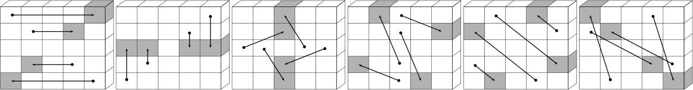
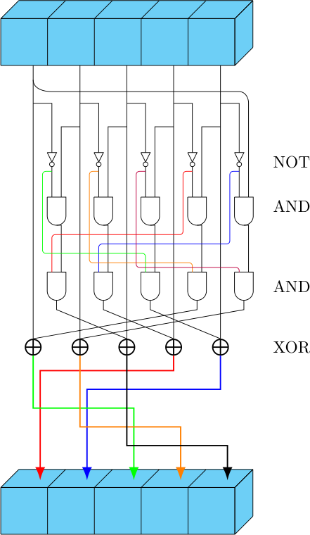

规范Thunder 杂凑家族 — 参数、模式、置换
权威来源：hash-33-spec.pdf
（52 页，英文；§2.2 模式、§2.3 Thunder-p、§2.4 hash、§2.5 XOF、§2.6 安全声明）。
ngcc.dev 整理的逐行算法笔记保存在 pseudocode.md。
本页数字均对照 spec 的 LaTeX 源（2026-10-31）核验。
参数（spec Tables 1、5、7）
| 参数 | Thunder-512 | Thunder-768 | Thunder-1024 | XOF-256 | XOF-384 | XOF-512 |
|---|---|---|---|---|---|---|
| 状态宽度 b | 1600 | 1600 | 1600 | 1600 | 1600 | 1600 |
| capacity c | 576 | 832 | 1088 | 576 | 832 | 1088 |
| absorb rate r | 1024 | 768 | 512 | 1024 | 768 | 512 |
| squeeze rate r′ | h = 512 | 768 | 1024 | 1280 | 1152 | 1024 |
| 轮数 | 12 | 12 | 12 | 12 | 12 | 12 |
| digest（spec） | 512 | 768 | 1024 | ν（任意） | ν（任意） | ν（任意） |
| collision 目标 | 256 | 384 | 512 | min{256, ν/2} | min{384, ν/2} | min{512, ν/2} |
| preimage 目标 | 512 | 768 | 1024 | min{256, ν} | min{384, ν} | min{512, ν} |
均以 bit 计。消息长度上限 2⁶⁴ bit。定长实例取 c = h + 64——正是前馈模式允许这样紧凑的 capacity（经典 sponge 要求 c ≥ 2h）。
XOF 命名陷阱。 与 Dragon 相同，
Thunder-XOF-256/384/512 中的数字是
安全等级而非输出长度。harness 通过固定长度的 CryptHash API 暴露 XOF，
digest 恰为一个 squeeze block（1280/1152/1024 bit = 160/144/128 字节）。
注意 XOF 的 r′ > c（如 1280 > 576）：一个 squeeze block 覆盖整个 inner 部分加部分 outer 部分，
这是前馈模式允许的（spec §2.5）。这三个固定长度不是三个独立的 hash 函数——短输出是长输出的前缀。模式：sponge-with-feed-forward（spec §2.2，Fig. 2）
与 Dragon 相同的 Sponge-F^{P,pd10*} 构造（Guo, Hu, Jiang, Fan, Fu, Preneel, Wang —
ePrint 2025/1006，发表于 CRYPTO 2026）：
inner（capacity）部分在每次置换调用间前馈，且 digest 从 inner 部分挤出。
正因为输出就是 inner 部分，final-block 常数 C = 0^{c−1}‖1 才是防长度扩展的关键。

Thunder-h(M): # h ∈ {512,768,1024}, c = h+64
X <- 0^r || IV # IV_j -> lane j
Mpad <- M || 1 || 0^{r-((|M|+1) mod r)} # pd10*
for i = 1..l: # absorb
X <- X XOR (M[i] || (i==l ? C : 0))
S <- right_c(X) # XOR 之后的 inner 部分
X <- P(X) XOR (0^r || S) # 前馈
return right_h(X) # h < c: 单次读取, 无额外置换
置换 Thunder-p（spec §2.3，Tables 2–4）
在 1600-bit 的 5×5×64 状态上做 12 轮 R = ψ ∘ π ∘ θ ∘ ρ ∘ ι——与 Keccak-p 相同的步骤顺序，
但有两处替换：

ψ（替代 Keccak 的 χ）是 3 次的：D'[x][y] = D[x][y+3] ⊕ ( ¬D[x][y+1] · D[x][y+2] · ¬D[x][y+4] )，下标在 Z₅ 中。θ混合两个列校验平面 P 与 Q（偏移 t = (41, 50, 6, 10, 27)、u = 26、r = 1、 s = 36），而 Keccak 只有一个校验平面。




lane 布局与串行化遵循 spec：消息字按大端装入最高编号的 rate lane（M_{n_r−1} 进 lane 24），
digest 为 D_{n_d−1} ‖ … ‖ D_0，每个 lane 按最高位在前串行化。
轮常数（spec Table 2）
| i | RCi |
|---|---|
| 0 | 0x0000000000000001 |
| 1 | 0x0000000000000003 |
| 2 | 0x000000000000000A |
| 3 | 0x0000000000000088 |
| 4 | 0x0000000000008081 |
| 5 | 0x0000000000008002 |
| 6 | 0x0000000000000009 |
| 7 | 0x0000000000000083 |
| 8 | 0x000000000000800A |
| 9 | 0x0000000000000089 |
| 10 | 0x0000000000008083 |
| 11 | 0x000000000000800B |
ρ 的 lane rotation 偏移 τ(x, y)（spec Table 3）
| y＼x | 0 | 1 | 2 | 3 | 4 |
|---|---|---|---|---|---|
| 4 | 6 | 18 | 49 | 17 | 43 |
| 3 | 48 | 30 | 61 | 8 | 38 |
| 2 | 34 | 5 | 0 | 2 | 37 |
| 1 | 40 | 52 | 19 | 47 | 9 |
| 0 | 45 | 33 | 13 | 1 | 27 |
θ 参数（spec Table 4）
| r | s | u | t_y（按 y = 0…4） |
|---|---|---|---|
| 1 | 36 | 26 | 41, 50, 6, 10, 27 |
文件
- 规范：
hash-33-spec.pdf - 算法笔记 + 完整 pseudocode + 实现核对：
pseudocode.md - 官方提交包
Thunder.zip— 下载与校验 （SHA-256db6970d5…b0c8，见 SHA256SUMS.txt）